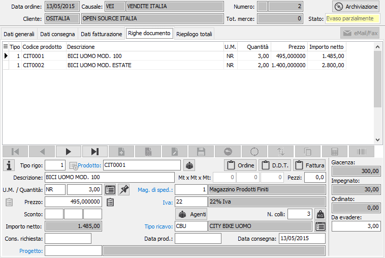
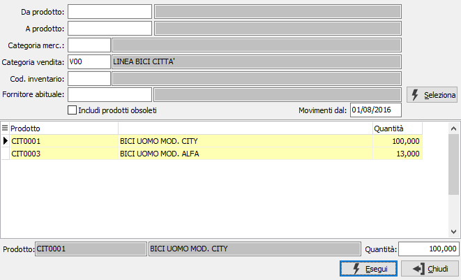
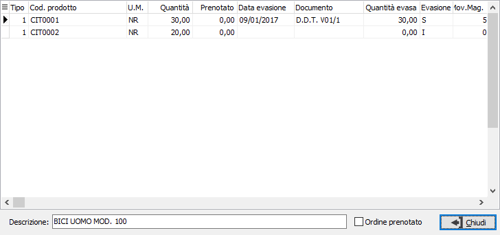
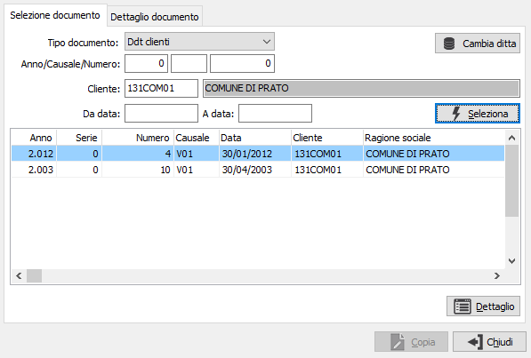
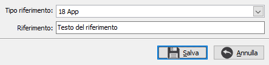
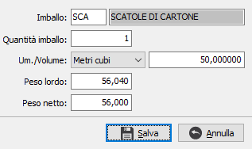
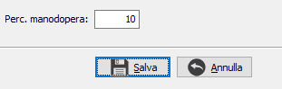
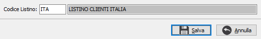
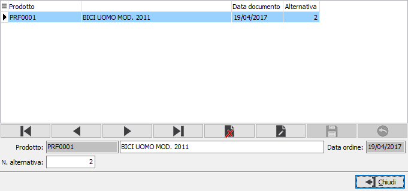

Utilizzando il pulsante presente accanto al tipo
rigo compare la seguente finestra:
Utilizzando il pulsante presente accanto al tipo
rigo compare la seguente finestra:Righe documento
In questa finestra video è possibile inserire i vari righi dell’ordine. È possibile inserire righi relativi ad articoli codificati, ad articoli non presenti in magazzino, ad omaggi di varia natura e descrittivi. Non tutti i campi visualizzati nell’illustrazione seguente sono necessariamente presenti nell’installazione attiva presso l’utente: ad esempio, se l’utente non utilizza il modulo Provvigioni non vengono visualizzati i campi relativi alle aliquote provvigionali; se l’utente non gestisce più magazzini o depositi, non viene visualizzato il campo Magazzino di spedizione e così via.
La maschera video è articolata su due sezioni: la sezione inferiore visualizza il pannello di input mentre la griglia della sezione superiore visualizza le righe inserite.

TIPO RIGO: codice
numerico presente sulla tabella dei tipi rigo utilizzato per definire
il tipo di rigo che si vuole inserire. Se l'ordine evade le offerte
è possibile richiamare la finestra di selezione delle offerte tramite
il tasto F12. Sul campo sono attive le funzioni di ricerca (F9).
Utilizzando il pulsante presente accanto al tipo
rigo compare la seguente finestra:

Da questa finestra è possibile utilizzando i criteri di selezione visualizzare, tramite il pulsante Selezione, un elenco di prodotto che è possibile inserire nel documento. Se nella configurazione del modulo standard è stato impostato il campo "N. mesi per ricerca prodotti movimentati" viene attivata la data "Movimentati dal" che permette di selezionare solo gli articoli movimentati dalla data indicata, in questo caso nella quantità viene visualizzata la quantità dell'ultimo documento. Per ogni prodotto visualizzato è possibile impostare una quantità, che sarà riportata sul rigo del documento; se la quantità viene impostata a zero il prodotto non sarà inserito nel documento. E' possibile anche selezionare o deselezionare il prodotto agendo con il doppio clic del mouse sulla riga del prodotto stesso, la selezione porta la quantità a 1; le righe che saranno importate sul documento appariranno di colore giallo chiaro. Se previsto in configurazione sarà presente un ulteriore pulsante per assegnare il fornitore.
PRODOTTO: campo alfanumerico per inserire il codice dell’articolo che si intende ordinare. Il campo è attivo solo per i tipi di rigo che prevedono l'accesso al prodotto. Sul campo sono attive le funzioni di ricerca (F9) ed accesso rapido alla tabella (CTRL+W). Tramite il tasto funzione F11 si può accedere alla finestra relativa alla Selezione descrizioni prodotti.
DESCRIZIONE: campo alfanumerico di 60 caratteri per descrivere il prodotto. In caso di articoli codificati, il campo viene compilato automaticamente con la descrizione dell’articolo in esame, che è tuttavia modificabile a cura dell’utente. In caso di tipo rigo che preveda di trattare voci di recupero spese sul campo è attiva la ricerca sulla tabella apposita; nel caso di tipo rigo che identifichi righe descrittive, sul campo è attiva la ricerca sulla tabella dei Testi fissi documenti, che consente di acquisire testi precedentemente inseriti ed assegnati ad un codice.
NOTE ORDINE: bottone che abilita un campo annotazioni, relative al rigo di documento attivo, che verranno stampate sul documento. Prima di confermare, è possibile richiedere la duplicazione del testo nelle note Ddt e/o nelle note fattura, apponendo le apposite spunte. Nel caso la causale lo preveda (casella stampa descrizione estesa con segno di spunta) ed il prodotto abbia una descrizione estesa dichiarata non fissa (casella fissa in anagrafica articoli non spuntata), questa viene automaticamente riportata in questo campo.
NOTE DDT: bottone che abilita il campo annotazioni, relative al rigo di documento attivo, che verranno riportate e stampate sul documento di trasporto. Prima di confermare, è possibile richiedere la duplicazione del testo nelle note fattura, marcando l’apposita casella.
NOTE FATTURA: bottone che abilita il campo annotazioni, relative al rigo di ordine attivo, che verranno riportate e stampate in fattura.
UNITÀ DI MISURA: campo alfanumerico di 3 caratteri, presente nella tabella Unità di misura, per descrivere l’unità di misura del prodotto. Per gli articoli codificati viene presentata automaticamente la prima unità di misura presente in anagrafica. L’unità di misura può essere modificata dall’utente, ma per gli articoli codificati vengono accettati solo i codici delle unità di misura presenti in anagrafica articolo. Se viene specificata la seconda o la terza unità di misura presente in anagrafica articoli, l’impegnato clienti viene calcolato in funzione del fattore di conversione relativo. Sul campo sono attive le funzioni di ricerca (F9) ed accesso rapido alla tabella (CTRL+W). Tramite il tasto funzione F11 si può accedere alla finestra relativa al fattore di conversione. Tramite il tasto funzione F12 si può accedere alla finestra relativa alla selezione di una unità di misura con conversione della quantità; tramite i tasti CTRL+F12 si può accedere alla finestra relativa alla conversione di una unità di misura all'unità di misura del documento.
LUNGHEZZA: campo visualizzato solo se in configurazione è attiva la gestione delle misure. Consente di impostare la prima misura (lunghezza) per il calcolo della quantità.
LARGHEZZA: campo visualizzato solo se in configurazione è attiva la gestione delle misure. Consente di impostare la seconda misura (larghezza) per il calcolo della quantità.
ALTEZZA: campo visualizzato solo se in configurazione è attiva la gestione delle misure. Consente di impostare la terza misura (altezza) per il calcolo della quantità.
PEZZI: campo numerico che indica la seconda quantità del documento, se attivato da configurazione. Se attiva la gestione delle misure, il valore del campo viene utilizzato per calcolare la quantità principale.
NUMERO COLLI: campo numerico che indica il numero dei colli relativi al rigo del documento, se attivato dalla configurazione del tipo rigo. Il valore del campo concorre alla formazione del totale colli.
QUANTITÀ: campo numerico per inserire la quantità ordinata per l'articolo attivo. Se attiva la gestione del dettaglio quantità è presente il bottone dettaglio, a destra del campo, tramite il quale sarà visualizzata la relativa finestra di dettaglio quantità; l'attivazione della finestra avviene comunque in automatico al momento dell'accesso al campo quantità. In caso di attivazione delle misure, la quantità viene visualizzata automaticamente come risultato della moltiplicazione fra i tre valori precedenti.
PREZZO: campo numerico per inserire il prezzo. Per gli articoli codificati viene presentato, nell’ordine, il prezzo dell'eventuale contratto associato al cliente o all'agente o alla zona o all'attività, oppure il prezzo presente nell'eventuale listino speciale, oppure il prezzo del listino prodotti memorizzato sul documento, oppure il prezzo di vendita presente in anagrafica articolo. Il prezzo proposto può essere modificato dall’utente. Sul campo agisce la funzione F11 che abilita la vista sugli ultimi prezzi praticati al cliente attivo relativamente al prodotto indicato, per consentirne l’eventuale acquisizione. La vista non viene abilitata se non esistono prezzi relativi all’articolo in esame. Non è invece consentita l’acquisizione del prezzo se l’articolo attivo è presente e valido nell’eventuale listino del cliente. E' presente anche la funzione F12 che consente di ripristinare il prezzo originale dell'articolo; la funzione CTRL+F11 che visualizza una finestra di informazioni economiche relative al prodotto (provenienza dei prezzi, provvigioni, sconti ecc.). Inoltre, per le righe di tipo servizio/recupero spese, con la funzione CTRL+F12 è possibile richiamare una maschera per assegnare delle spese in percentuale al valore delle righe inserite fino a quel momento.
SCONTI O MAGGIORAZIONI: campi, abilitati o meno in relazione al numero sconti previsto in configurazione, per inserire una percentuale di sconto o maggiorazione. Se esistenti, vengono proposte le percentuali di sconto esistenti in anagrafica clienti, in anagrafica articoli o in listini clienti. A conferma dell’ultimo sconto, viene visualizzato l’importo netto di rigo.
MAGAZZINO DI SPEDIZIONE: codice del magazzino aziendale da cui deve essere disposta la merce per l’evasione dell’ordine. Viene proposto il magazzino presente in configurazione. Sul campo sono attive le funzioni di ricerca (F9) ed accesso rapido alla tabella (CTRL+W).
CODICE IVA: codice I.V.A. memorizzato sull'articolo. Se l’ordine prevede l’esenzione Iva, viene proposto il codice di esenzione stesso. Sul campo sono attive le funzioni di ricerca (F9) ed accesso rapido alla tabella (CTRL+W).
Versione Enterprise:
TIPO RICAVO: codice del tipo ricavo memorizzato sull'articolo. Consente la corretta contabilizzazione del ricavo generato dal rigo di fattura derivante dall’ordine. Sul campo sono attive le funzioni di ricerca (F9) ed accesso rapido alla tabella (CTRL+W).
Altre versioni:
CODICE RICAVO: codice del sottoconto memorizzato sull'articolo. Utilizzato per la contabilizzazione del ricavo generato dal rigo di fattura derivante dall’ordine. Sul campo sono attive le funzioni di ricerca (F9) ed accesso rapido alla tabella (CTRL+W).
 Il pulsante
consente di accedere, se attivo il modulo di contabilità analitica, alla
sezione dove indicare il centro di ricavo, la voce di ricavo e la commessa,
in base a quanto indicato in configurazione
contabilità analitica.
Il pulsante
consente di accedere, se attivo il modulo di contabilità analitica, alla
sezione dove indicare il centro di ricavo, la voce di ricavo e la commessa,
in base a quanto indicato in configurazione
contabilità analitica.
PROVVIGIONE 1: campo visualizzato solo in caso di attivazione del modulo Provvigioni e gestione delle stesse sul rigo del documento, contenente la percentuale di provvigione riservata all’agente 1. Tale percentuale viene abitualmente proposta dal programma in relazione ai parametri previsti, ed è modificabile.
PROVVIGIONE 2: campo visualizzato solo in caso di attivazione del modulo Provvigioni e gestione delle stesse sul rigo del documento, contenente la percentuale di provvigione riservata all’agente 2. Tale percentuale viene abitualmente proposta dal programma in relazione ai parametri previsti, ed è modificabile.
Se prevista in configurazione la gestione degli agenti di rigo, i campi provvigione non saranno visualizzati, ma sarà presente il pulsante Agenti. La pressione del pulsante accede ad una finestra dalla quale sarà possibile inserire o modificare i codici agenti e le relative percentuali di provvigione.
PARTITA: campo abilitato solo in caso di attivazione della gestione Partite, per inserire il numero della partita a cui appartiene l'articolo.
CONSEGNA RICHIESTA: campo data non obbligatorio, presente solo se previsto in configurazione conferme d’ordine, per l’eventuale inserimento della data di consegna di rigo richiesta dal cliente.
DATA PRODUZIONE: campo data non obbligatorio, presente solo se previsto in configurazione conferme d’ordine, per l’eventuale inserimento della data di approntamento di rigo comunicata dalla produzione.
DATA CONSEGNA: campo data non obbligatorio, presente solo se previsto in configurazione conferme d’ordine, per l’eventuale inserimento della data effettiva di consegna di rigo. È consigliabile inserirla (comunque viene proposta la data dell'ordine). Utilizzando il tasto funzione F12 è possibile accedere all'analisi disponibilità per consegna.
CODICE PROGETTO: Codice alfanumerico di 15 caratteri che definisce il progetto di riferimento. Sul campo sono attive le funzioni di ricerca (F9) ed accesso diretto alla tabella (CTRL+W). Il campo è presente solo se attiva la gestione progetti e configurato il progetto sul rigo.
Nella finestra video è possibile scorrere i righi di documento, visualizzando quello attivo nel pannello di input, tramite i tasti CTRL+freccia giù e CTRL+freccia su. Un rigo di documento visualizzato nel pannello di input può essere eliminato, ancorchè privo di trattamenti successivi, premendo il bottone Elimina della barra strumenti del pannello di input; è possibile inserire un rigo vuoto immediatamente successivo al rigo attivo premendo il bottone Nuovo della barra strumenti del pannello di input.
 Tramite il pulsante Dettaglio evasione rigo, è possibile
visualizzare lo stato di evasione del rigo. Nella finestra compaiono i
riferimenti ai documenti con cui è stato evaso parzialmente o totalmente
il rigo dell'ordine.
Tramite il pulsante Dettaglio evasione rigo, è possibile
visualizzare lo stato di evasione del rigo. Nella finestra compaiono i
riferimenti ai documenti con cui è stato evaso parzialmente o totalmente
il rigo dell'ordine.

 Tramite il pulsante Ordina è possibile modificare
l'ordinamento delle righe del documento spostandole singolarmente tramite
gli appositi tasti di scorrimento oppure selezionando e trascinando le
singole righe. La pressione sul pulsante Salva determina la modifica effettiva
dell'ordinamento.
Tramite il pulsante Ordina è possibile modificare
l'ordinamento delle righe del documento spostandole singolarmente tramite
gli appositi tasti di scorrimento oppure selezionando e trascinando le
singole righe. La pressione sul pulsante Salva determina la modifica effettiva
dell'ordinamento.

 Tramite il pulsante Copia è possibile inserire nel
documento righe estratte da altri documenti, uguali o di altro tipo, i
parametri vengono proposti in base alla Configurazione
copia righe documenti.
Tramite il pulsante Copia è possibile inserire nel
documento righe estratte da altri documenti, uguali o di altro tipo, i
parametri vengono proposti in base alla Configurazione
copia righe documenti.

La finestra permette di specificare diversi criteri di selezione, tra cui il tipo di documento, l'anno, la causale, il numero, il cliente e l'eventuale periodo di analisi; è comunque necessario premere il pulsante Seleziona che visualizzerà nella griglia sottostante l'elenco dei documenti coerenti con i parametri di selezione richiesti. Premendo il pulsante Dettaglio vengono visualizzate le righe del documento selezionato. è presente il pulsante "Cambia ditta" che consente di selezionare un'altra azienda da cui copiare i dati; quando l'azienda è diversa dalla corrente il pulsante appare col testo evidenziato e sotto viene mostrato il nome dell'azienda.

In questa sezione è possibile selezionare le righe da inserire nel documento attivo spuntando le caselle relative, oppure utilizzando il menù abbinato al tasto destro del mouse, che prevede le voci seleziona tutto e deseleziona tutto. Premendo il pulsante Copia le righe selezionate vengono inserite nel documento attivo. Al momento della copia sarà visualizzato un pannello con le opzioni di copia: assegnare prezzo/sconti, assegnare descrizione e unità di misura del prodotto, assegnare il magazzino, assegnare i conti; se le opzioni sono spuntate verranno effettuate le assegnazioni in base ai dati del nuovo documento, altrimenti rimarranno i valori originali del documento da cui si sta copiando.
 Tramite questo pulsante è possibile rinumerare le
righe del documento.
Tramite questo pulsante è possibile rinumerare le
righe del documento.
 Tramite il pulsante Barcode, se presente ad attivo
il relativo modulo è possibile inserire nel documento dati
provenienti da lettori ottici.
Tramite il pulsante Barcode, se presente ad attivo
il relativo modulo è possibile inserire nel documento dati
provenienti da lettori ottici.
 Se attivo il modulo "Gestione CONAI" ed
in base a determinati parametri specifici, è presente il pulsante per
accedere alla Gestione dei dati
Conai.
Se attivo il modulo "Gestione CONAI" ed
in base a determinati parametri specifici, è presente il pulsante per
accedere alla Gestione dei dati
Conai.

Se attiva la gestione dei riferimenti, attraverso il parametro “Gestione riferimenti su documenti” presente nella configurazione “Standard – Ciclo attivo” nella configurazione del modulo standard, è presente sul rigo del documento il bottone per accedere ai dati relativi al riferimento; la pressione del pulsante visualizza la finestra a lato dove è possibile indicare relativamente al rigo documento, una tipologia di riferimento gestita tramite la tabella Tipologie riferimenti documenti, ed un campo descrittivo; entrambi vengono trasferiti da un documento all’altro in fase di evasione e di copia documenti. Attraverso l’utilizzo di questo meccanismo si possono anche gestire le fatture elettroniche da inviare al MIUR per il rimborso dei voucher tipo 18App oppure Carta del docente.

Se attiva la gestione dei pesi modificabili, nella configurazione del modulo standard, è presente sul rigo del documento il bottone per accedere ai dati relativi al peso, al volume ed all'imballo; la pressione del pulsante visualizza la finestra a lato dove è possibile indicare relativamente al rigo documento, volume, peso lordo, peso netto, codice e quantità imballo. Tali dati vengono utilizzati per il calcolo dei totali.

Se attiva la gestione dell'Iva sulle ristrutturazioni ed attiva la gestione anche sulla causale del documento sarà presente, di fianco all'importo netto, il pulsante a lato; premendolo si accede alla finestra mostrata a destra; da questa finestra è possibile assegnare la percentuale di incidenza della manodopera sul valore del rigo; se presente sull'articolo del rigo viene proposta in automatico come default.


Se attiva la gestione dei listini di rigo, configurabile tramite l’omonimo parametro in configurazione “Standard - ciclo attivo”, è presente, accanto al campo prezzo, il pulsante mostrato a sinistra che può essere utilizzato per riassegnare il listino al rigo corrente; si apre la finestra mostrata a destra dove indicare il nuovo codice listino; sul campo è attivo lo zoom (F9) che visualizza tutti i listini di tipo prezzi e il tasto funzione F11 che visualizza solo i listini validi per il prodotto; la pressione del pulsante Salva comporta la riassegnazione del prezzo e relativo ricalcolo degli importi del rigo. Il codice del listino è sempre presente sul rigo del documento, se non è gestito il listino di rigo viene assegnato comunque uguale al listino di testa al salvataggio finale del documento. In fase di evasione documento il codice listino, come il prezzo, viene preso dal documento di origine.

Se prevista la gestione delle alternative e configurata la possibilità di inserirla da ordini sarà presente anche il pulsante mostrato a lato; premendolo si apre la finestra a destra dove viene preimpostata l'alternativa preferenziale; in questa fase è possibile modificare l'alternativa, selezionandola con F9 sul campo alternativa, che sarà utilizzata dalla generazione della RDP. Premendo il tasto Salva la modifica diventa definitiva.